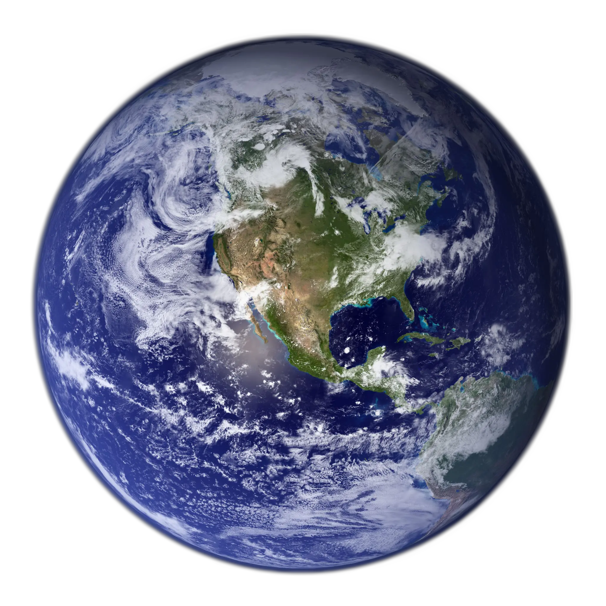

Bumi
Bumi merupakan planet ketiga dari Matahari sekaligus objek astronomi terbesar dan terpadat di antara empat planet terestrial Tata Surya. Bumi adalah satu-satunya benda langit yang terkonfirmasi memiliki kehidupan, ditopang oleh keberadaan air cair yang stabil di permukaannya (hidrosfer) serta atmosfer kaya nitrogen-oksigen. Bumi memiliki magnetosfer yang kuat akibat efek geodinamis arus konveksi paduan besi-nikel cair di inti luar, yang melindungi biosfer dari radiasi kosmik dan angin surya. Secara geologis, Bumi adalah satu-satunya planet terestrial yang mempertahankan tektonika lempeng aktif, yang berperan penting dalam siklus karbon sirkulasi global dan pembaruan permukaan secara terus-menerus. Bumi dikelilingi oleh satu satelit alami masif, yaitu Bulan, yang menstabilkan kemiringan sumbu rotasi Bumi (23,44°) dan memicu dinamika pasang surut air laut.